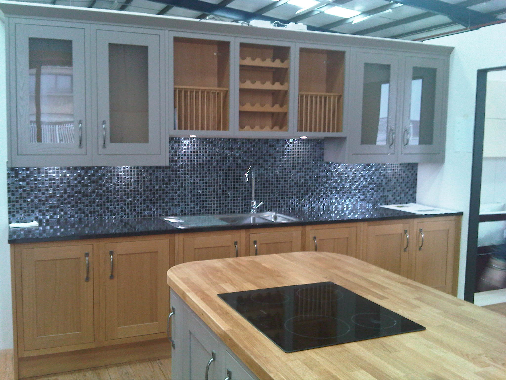

ABISS Business Solutions Ltd
Shopfitting
Media work
We have specialised in media projects for both magazine and TV shoots, executing extremely fast implementation of displays to suit media companies' timescales. We have experience in working at Pinewood Studios, Black Island Studios, an exhibition show at a top Mayfair gallery, as well as other locations.
Prototype support
ABISS have vast experience of working direct with suppliers in testing and trying out new products, giving feedback on the quality of the product and ease of installation, We work with the suppliers on verifying instruction manuals and working on installation costs and margins.
Commercial fit-out

ABISS have the ability to execute commercial fit-outs, however big or small, with full management support from the concept to implementation, allowing our clients to drive down costs and have confidence in hitting target dates.
Showrooms
Kitchens

ABISS have successfully worked with many high street kitchen retailers, implementing projects from range changes to full range reviews and full store fit-outs. We successfully completed 27 displays in 330 stores in the UK overa 10 week period. We have also completed full store fit-outs in reduced timescales.
Bedrooms & Furniture
ABISS assisted a major high street retailer in the successful change of high level bedroom displays, following the supplier's administration, delivering the full estate change in a 4 week period, reducing the overall impact on sales to a minimum. ABISS have also supported new Italian furniture in a UK wide rolling roadshow.
Bathrooms

ABISS has worked with major UK bathrooms suppliers and high street retailers in delivering multiple change programmes and new range development changes in multiples stores. ABISS delivered 100 store range changes of 5 suites in each store over a 2 week period.
Commercial
Range Review

ABISS have a proven record in the complicated area of showroom range change, with a team dedicated to right first time and our clients' retail outlets as the main focus of the implementation. We have a proven record in achieving a customer's proposition in the least amount of fuss.
Change Programmes
ABISS has the ability to react quickly to potential change programmes, with the ability to react quickly to sudden changes in display requirements, working closely with stock vendors and our client distribution to ensure the impact of sudden range change requirements are dealt with efficiently
Display Swap-Out

ABISS's initial success in these fields was driven by the ability to implement efficiently display swap-outs. Having worked with all the major high street kitchen retailers, ABISS have proven that we are the kitchen change specialists. A recent client satisfaction result scored ABISS 4.82 out of 5.
Project Management
Consultancy
ABISS have the experience, knowledge and proven track record to offer consultancy programs dedicated to your project, assisting in delivering a right first time experience. Support can be offered on planning, budgets, stock, H&S, communication, training, Implementation and reporting.
Site Management
As part of ABISS's planning project, we offer SMSTS qualified project managers that can offer support in planning, H&S, site management, audit and reporting, as well as contractor management. They will also support in implementing swift resolutions to remedials.
Reporting
ABISS use digital technology where possible in offering information capture on display layout mechanisms, survey capture, digital reporting and updating clients on progress. ABISS always conduct a satisfaction survey through our audit process to get feedback for continual improvement.
Audit
Information Capture
ABISS have conducted many large information capture projects from very detailed requirements to more large scale, full store surveys. We have conducted very detailed and exact surveys, from a full store refridgeration audit in a FMCG leading food retailer to a wall size capture in a DIY retailer to the millimetre.
Surveys
ABISS will always try and insist on conducting full surveys and communication packs to our client's stores or outlets in the projects we undertake. Our policy of right first time is greatly affected by the quality and exactness of the survey results. We use this time to also conduct communication to the end clients.
Reviews
ABISS will always conduct a review of the project, both in planning and in the final implementation of the store. This allows ourselves and our clients to conduct a risk evaluation prior to commencement and constructive feedback at the end of the project.
Design
Concept
ABISS work with suppliers and clients on planning and surveying, and can provide support in the design and concept of any manufacturing or planned program roll-outs. Having a dedicated joinery workshop allows us to support in the design of exhibitions, stands and display supports.
Testing

ABISS has prevously worked with major suppliers and retailers in the testing of products, systems, quality control, installation techniques and new installation methods of new and emerging products from market places all over the world.
Implementation
ABISS have worked on a number of new concept projects, working closely with our clients on offering a service or retail proposition from design to concept. ABISS worked on two new service propsitions simultaneously, delivering successful results in both areas of the business.
Contact
Phone Number: 07841 020265
Email: enquiries@abisssolutionsltd.com